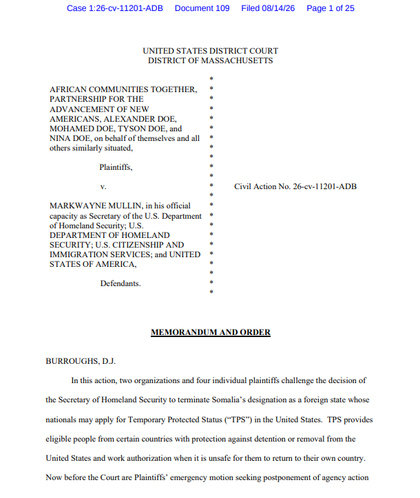
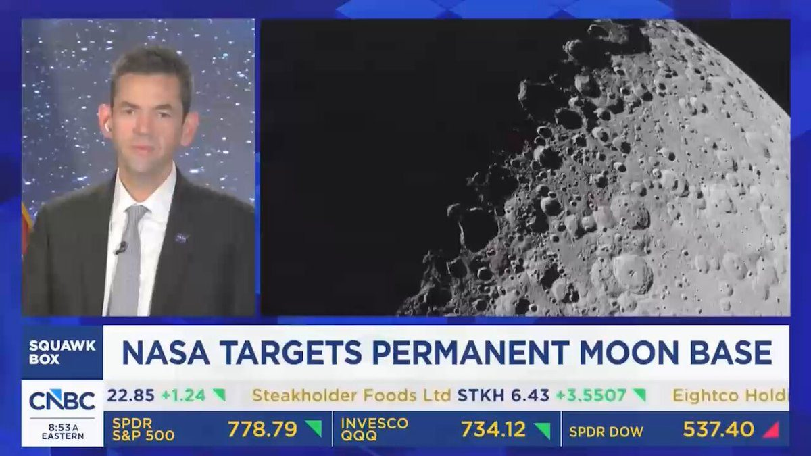

#BREAKING: Trump says he’ll soon “declare the Hormuz Strait as a territory of the U.S.”
🇮🇱🇱🇧 Firefighters and residents in southern Lebanon say the Israeli military is deliberately setting wildfires across the region.
They’re allegedly using flares, incendiary munitions, and white phosphorus to burn forests, olive groves, and farmland.
The head of civil defense in the Nabatieh region says nearly all their missions now involve fires, and that near the frontline, 30 to 40% of the land has burned.
He says it started right after the June 17 ceasefire and has continued daily.
In the border village of Yaroun, residents say occupying troops torched generations-old olive groves after bulldozing all but 20 of the village's 900 houses.
The Israeli military says its operations are "conducted while taking precautionary measures to mitigate harm to civilians and the environment."
On paper, burning civilian farmland with no military justification is a war crime.
In practice, it's just another day in southern Lebanon.
Source: The Guardian / Writer: Julie
INSANE LEAK.
Yom Tov Glaser, a top-Rabbi close to Netanyahu, just exposed Israel’s real plan for Western nations that refuse to bend to Israel.
He openly declared that the moment America and Europe stop supporting the Jews, they will be brought to their knees and annihilated.
▶ Watch on XTHIS IS NUCLEAR.
World Jewish President Ron Lauder admitted that any politician who will dare oppose Israel will be “DEFEATED” by force.
He demanded heavier Holocaust programming in all schools and full weaponization of social media to silence critics against Jewish people.
▶ Watch on X.@POTUS on Long Island: Nowhere is the Communist attack on American society more clear than here in New York. Radical Left @GovKathyHochul has been a NIGHTMARE on crime:
❌ She supports New York's disastrous No Cash Bail law, which releases dangerous criminals immediately after arrest.
❌ She supported the release of convicted murderers who killed New York police officers.
❌ She signed a law weakening parole enforcement for convicted felons.
❌ She spent millions of dollars providing taxpayer-funded lawyers to illegals.
❌ Less than three months ago, she signed a deadly and seditious new law making New York a so-called "sanctuary state" — meaning Hochul wants to release migrant criminals from jail and set them loose to prey on innocent New Yorkers.
Solar rapists at the Excelsior Solar project in Genesee County NY have begun stripping topsoil from some 3,600 acres of USDA prime farmland. A meat-and-grain American diet needs one acre of land to feed one person for a year. Put in to potatoes, corn or wheat, one acre will feed four people. Intensively tended, as in a garden or a family farm, an acre will feed five or more people a full, diverse diet. That means this Kathy Hochul-mandated project will forever destroy agricultural land that could have fed between 3,600 and 21,600 people a year in perpetuity.
“It’s time for the people of New York to remind your politicians that their job is not to protect the criminals, their job is to protect the good, hardworking people.” - President Donald J. Trump. 🇺🇸
STOP PROTECTING CRIMINALS.
🚨 WOW! Gov. Ron DeSantis just unveiled a beautiful Andrew Jackson statue in JACKSON COUNTY, FLORIDA
Florida now has statues of: - Thomas Jefferson in JEFFERSON County - Ben Franklin in FRANKLIN County - James Monroe in MONROE County - Alexander Hamilton in HAMILTON County - George Washington in WASHINGTON County - James Madison in MADISON County - Andrew Jackson in JACKSON County - Liberty Bell in LIBERTY County - Abraham Lincoln in The Villages
"We think it's IMPORTANT to give credit to the Founding Fathers!" ☀️
FLORIDA DOES IT RIGHT!
We will take every American history statue that blue states want to destroy or throw away and put them up everywhere 🇺🇸
JUST IN: Building roughly 650 feet from the White House reportedly purchased by a former CCP intelligence official.
🚨 A federal judge will allow the Trump administration to end Temporary Protected Status for Somalia, denying a bid to block the termination and lifting an administrative stay that had temporarily prevented it from taking effect.

Mass migration touches every part of American life.
It suppresses wages. It drives up rents. It overwhelms hospitals. It strains our social institutions. It makes our roads less safe.
▶ Watch on XTrump admin developing strategies to “destroy” sanctuary cities.
🚨 Your tax dollars have become the new money-laundering scheme for these corrupt politicians. Governor Hochul has been taking donations from these daycare fraudsters in NYC who receive millions of your taxpayer dollars to operate “adult daycares”
When I exposed the fraud in NYC, Governor Hochul and Mayor Mamdani went completely silent… maybe they didn’t want to offend their donors? 👀
.@POTUS: Since I took office, federal law enforcement has arrested 1.2 million criminals nationwide and we've increased federal criminal prosecutions by over 50%.
Under the Trump Administration, the FBI has nearly doubled its arrests for violent crime — and as of this week, we have captured 9 out of the 10 fugitives on the FBI's Most Wanted List.
If regulators want to keep pace with the speed of innovation, we must listen to the people driving it.
Next Thursday, the @CFTC will convene some of America's brightest innovators, entrepreneurs, thinkers, and builders at our Inaugural Innovation Advisory Committee Meeting for a conversation about the future of finance.
MADE IN AMERICA: Apple is reshoring its Mac Mini manufacturing in Texas — another result of President Trump's powerful trade agenda that is bringing manufacturing back home once again.
Fact Sheet: President Donald J. Trump Rebuilds the U.S. Navy and America’s Shipbuilding Industrial Base
"We've made incredible progress in low Earth orbit... but it's time to take the next step — to go to the surface of the Moon and establish the enduring presence," says @NASAAdmin.
"Number one goal: master the skills necessary to go to Mars."

▶ Watch on XBessent says US ‘to apply measures’ on Iran that ‘have never been seen in history’
JUST IN: JD Vance warns Republicans not to “blame young people for being sympathetic to socialism” if the GOP fails to improve their lives economically.
#BREAKING: FBI arrests Massachusetts Mayor Brian DePeña over $1.5M COVID loan fraud.